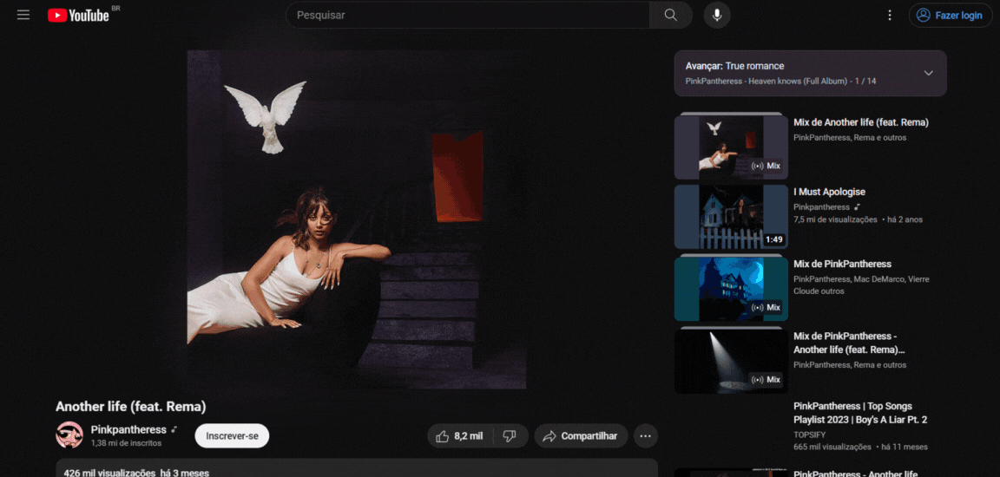

Em suma, uma aplicação Web é um software que é executado em um navegador da Web. Essa aplicação tem características fundamentais: recebe uma entrada com a interação do usuário, processa com uma lógica central e gera uma resposta.
Aplicação web é aquela acessada pelo navegador (completo ou parte dele), enquanto uma aplicação desktop ou mobile são aquelas acessadas diretamente pelo sistema operacional do dispositivo.
A aplicação web é um sistema completo hospedado em um servidor na Internet; entregam serviços aos usuários de modo a lhes permitir executar funções e tarefas, podendo receber e enviar informações pela rede. Já um Website nada mais é que um site estático com o objetivo de apresentar informações e permitir a navegação por meio de links.
Sites como YouTube, Gmail, Amazon, Google Docs e redes sociais como Twitter (X) ou Facebook.
Um servidor é um recurso dentro de um sistema computacional, capaz de processar aplicações, armazenar dados e prestar serviços, enquanto o cliente é um computador ou dispositivo que solicita esses serviços e recursos.
Um banco de dados é uma coleção organizada de informações - ou dados - estruturadas, normalmente armazenadas eletronicamente em um sistema de computador e que é geralmente controlado por um sistema de gerenciamento de banco de dados (DBMS).
HTML (HyperText Markup Language) é uma linguagem de marcação de hipertexto utilizada na criação de documentos e páginas da web. Os marcadores, chamados de “tags”, servem para indicar a função de cada elemento na página.
CSS (Cascading Style Sheets) é usado para estilizar elementos escritos em uma linguagem de marcação como HTML. O CSS separa o conteúdo da representação visual do site.
JS (Javascript) é uma linguagem de programação que permite ao desenvolvedor implementar diversos itens de alto nível de complexidade em páginas web, como animações, mapas, gráficos ou informações que se atualizam em intervalos de tempo padrão, por exemplo.
O Python é uma linguagem de programação amplamente usada em aplicações da Web, desenvolvimento de software, ciência de dados e machine learning (ML). Desenvolvedores a utilizam porque é fácil de aprender e pode ser executada em muitas plataformas diferentes.
O PHP é uma linguagem de script open source de uso geral, muito utilizada, e especialmente adequada para o desenvolvimento web podendo ser embutida dentro do HTML.
A linguagem C é uma linguagem de programação de alto nível que foi criada nos anos 1970 para desenvolvimento de sistemas operacionais. Ela é amplamente utilizada em sistemas embarcados.
As aplicações web são importantes porque é por meio das possibilidades que elas oferecem que podemos alcançar diversas funcionalidades, tais como inserir acessibilidade nas aplicações, criar uma interação do usuário com o sistema (em vez de apenas receber uma página estática) permitindo que os usuários executem tarefas. Além disso, elas tem sua importância destacada ainda no fato de que os usuários podem enviar informações pela rede nessas aplicações.
Para o contexto atual e para o futuro, podemos destacar que a aplicação web foi o que impulsionou o mercado de desenvolvedores web, além do fato de que elas estão sempre em constante atualização; isto é, trabalhar com uma aplicação web permite com que o desenvolvedor mantenha sempre sua aplicação com tecnologias atualizadas, oferecendo sempre ao usuário a melhor experiência possível.
Podemos observar que cada vez mais é exigido que os usuários possam interagir e ter funcionalidades nos sistemas que utilizam, por isso a aplicação web é importantíssima para o atual e futuro, porque um website estático não consegue (e conseguirá cada vez menos) suprir tarefas que, hoje, já consideramos indispensáveis, e outras que poderemos considerar assim, no futuro.